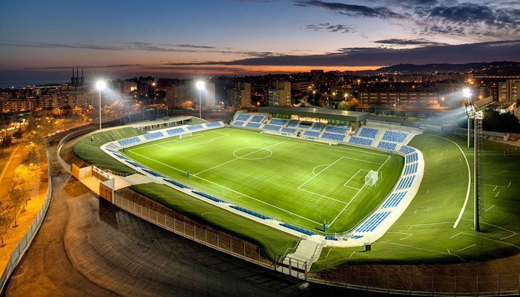

Husking Rovers FC
Victory is The Part of The Effort
Husking Stadium is the proud home of Husking Rovers, a modern arena where passion and architecture meet. The design allows for both intimacy and grandeur, ensuring that every roar from the crowd reverberates through the stands.
The stadium seats thousands of fans, offering clear sightlines and state-of-the-art facilities. More than just a venue, it has become a landmark of Badalona, a place where history is written every matchday.
Walking into Husking Stadium is stepping into a cathedral of football. From the banners to the chants, every detail reflects the pride of the Lions of Badalona. For supporters, it is not just a place to watch football—it is home.